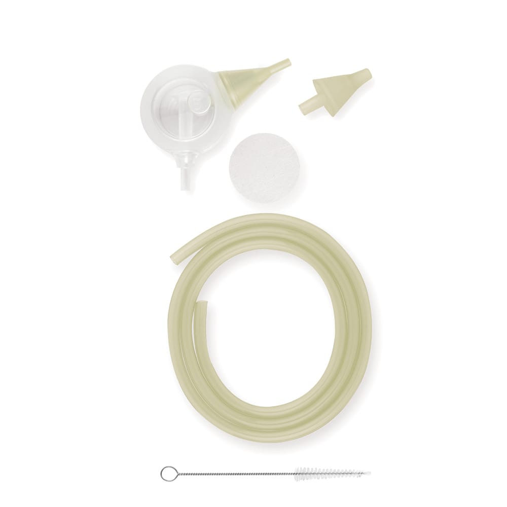

01
流れを生み、調整する。
空気の流れを活かす設計と、ダイヤルによる吸引力調整。テクノロジーを、扱いやすい操作に。
AIR FLOW TECHNOLOGYENGINEERED AIRFLOW. CONSIDERED CARE.
Air Flow Technologyを核にした、上質な鼻水ケア。
吸引力の調整から、手に触れるかたちまで。
大切な家族のために、選びたい一台を。
TECHNOLOGY × DESIGN
ヨーロッパ生まれの、プレミアムケア。
THE DIFFERENCE IS IN THE FLOW
Air Flow Technologyエアフローテクノロジー
空気の流れを活かして、
鼻水を吸引するという発想。
Nosiboo Proが大切にしているのは、吸引圧の強さだけではありません。空気の流れを活かす設計で、鼻水を吸引する。それがAir Flow Technologyの考え方です。
メーカーの模型試験では、比較対象より低い吸引圧と高い空気流量の組み合わせによる、分泌物の除去性能が報告されています。※
仕組みを示す概念図。実際の形状・流速・流量を表すものではありません。
鼻水吸引器を選ぶ、
もうひとつの視点。
空気を引く圧力の指標。
単位時間に動く空気の量。
比べたいのは、数値ひとつではなく、
圧力・流量・ヘッド構造の組み合わせ。
※メーカー公表の前臨床模型試験に基づきます。ヒトでの臨床効果や、日本で販売される全製品に対する優位性を示すものではありません。

OUR PHILOSOPHY
まだ自分で上手に鼻をかめない、
小さな子どもたちのために。
Nosibooは、子どものことを思う気持ちから生まれました。耳鼻科医の知見を取り入れながら、家庭での鼻水ケアを考えて開発された製品です。
赤ちゃんへの配慮はもちろん、使う人の操作や、使い終わったあとのお手入れまで。家族の暮らしになじむ使いやすさを大切にしています。
Nosiboo Proの特長THOUGHTFULLY DESIGNED
毎日手にするものだから。
その細部に、上質を。
空気の流れを活かす設計と、ダイヤルによる吸引力調整。テクノロジーを、扱いやすい操作に。
AIR FLOW TECHNOLOGY鼻水を受け止めるColibriヘッドは分解して洗浄。繰り返し使うものだから、片付けやすさも考えました。
EASY-TO-CLEAN HEAD丸みのある、親しみやすいデザイン。子どものいる暮らしに、やわらかな彩りを添えます。
CHILD-FRIENDLY DESIGN写真はメーカーの製品イメージです。日本の取扱カラー・付属品はお問い合わせください。
PREMIUM ELECTRIC NASAL ASPIRATOR
ノシブー プロ ｜ 電動鼻水吸引器
管理医療機器
選ぶ理由は、
見える美しさの、その先に。
Air Flow Technology、調整できる吸引力、分解して洗えるColibriヘッド。機能とデザインをひとつにした、プレミアムな据え置き型電動鼻水吸引器です。
価格・在庫・購入方法は、日本窓口よりご案内します。
専用アクセサリーを見るACCESSORIES
交換にも、ご家族での使い分けにも。
Nosiboo Proのケアを支える純正パーツ。

NOSIBOO PRO EXCLUSIVE
ノシブー プロ アクセサリーセット
Colibriヘッドや吸引チューブなどをまとめた、Nosiboo Pro専用の交換用セット。部品の交換や、お子さまごとのヘッドの使い分けにお役立ていただけます。
写真・構成はメーカー掲載の製品イメージです。日本での販売セットの構成・カラー・価格・在庫は、日本窓口へお問い合わせください。交換・お手入れは、製品の取扱説明書に従ってください。
アクセサリーについて相談するA SIMPLE ROUTINE
準備から片付けまで。
使う前に、ひとつずつ確認しましょう。
付属の取扱説明書に従って組み立て、ヘッド・チューブの接続を確認します。
お子さまの様子を見ながら、取扱説明書に沿って吸引力を調整して使用します。
電源を切り、説明書に従ってヘッドを取り外し、お手入れを行います。
使用後はColibriヘッドを取り外し、付属の取扱説明書に従って分解します。
取り外したヘッドのパーツを洗浄します。本体を水に浸さないでください。
洗ったパーツはよく乾かし、清潔に保管します。消毒方法は説明書をご確認ください。
こちらはケアの流れの概要です。使用方法・使用時間・お手入れの詳細は、お手元の日本語取扱説明書・添付文書に従ってください。
LET'S TALK
製品選び、使い方、お取扱いのご相談。
Nosiboo Japanへお気軽にお問い合わせください。